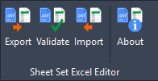
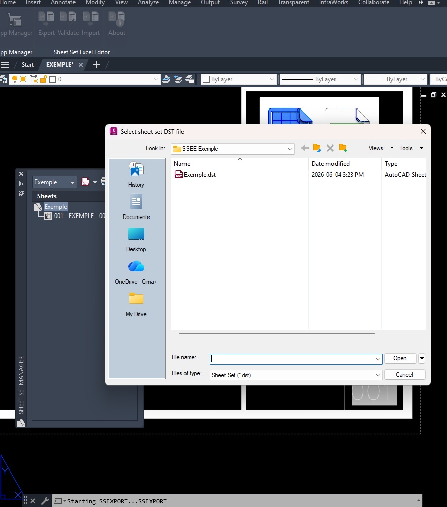
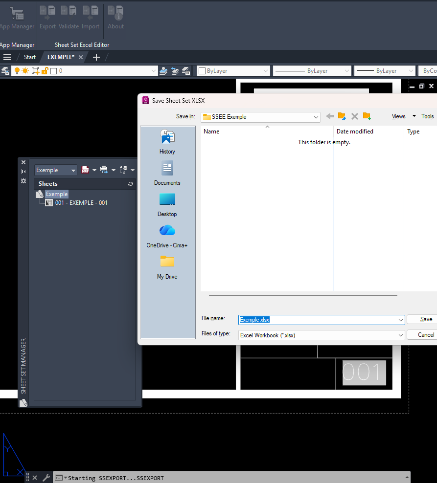
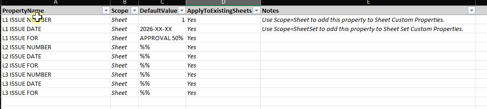
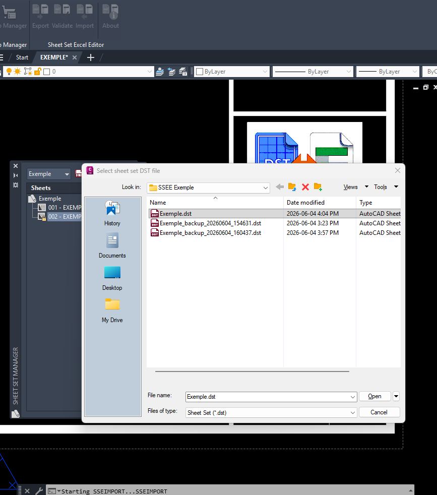
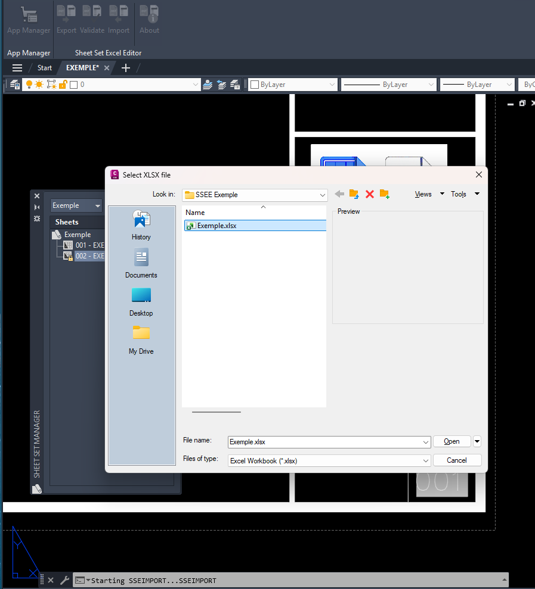
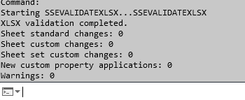

Why use Sheet Set Excel Editor?
Managing Sheet Set properties one sheet at a time can be slow and error-prone. Sheet Set Excel Editor enables bulk editing of Sheet Set data using Microsoft Excel while maintaining validation and import controls.
Users can review changes before applying them and automatically create a backup of the DST file before import.
Workflow
Features
Export to Excel
Export Sheet Set data from DST files to XLSX format.
Bulk Edit
Edit Sheet and Sheet Set custom properties directly in Excel.
Create Custom Properties
Create new Sheet and Sheet Set custom properties from Excel.
Validate Before Import
Review changes before updating the Sheet Set.
Safe Import
Import validated changes back to the DST file with automatic backup creation.
Ribbon Integration
Access Export, Validate, Import, About and Help directly from the AutoCAD ribbon.
Supported Capabilities
| Feature | Status |
|---|---|
| Export Sheet Set Data to Excel | Supported |
| Edit Sheet Custom Properties | Supported |
| Edit Sheet Set Custom Properties | Supported |
| Create New Custom Properties | Supported |
| Validation Before Import | Supported |
| Automatic DST Backup | Supported |
| AutoCAD 2026 / 2027 | Supported |
| Civil 3D 2026 / 2027 | Supported |
Videos
Export Sheet Set Data
Export Sheet Set data from a DST file to an Excel workbook.
Create Custom Properties
Create new Sheet or Sheet Set custom properties in Excel.
Import Changes
Import edited custom properties back into the Sheet Set.
Screenshots
Ribbon Integration

Export - Select DST File

Export - Save XLSX File

Edit in Excel

Import - Select DST File

Import - Select XLSX File

Validation Result

FAQ
Does the plugin modify my DST immediately?
No. Changes can be reviewed using the validation command before import.
Is a backup created?
Yes. A timestamped backup of the DST file is automatically created before import.
Can I add new custom properties?
Yes. Both Sheet and Sheet Set custom properties can be created through Excel.
Is Microsoft Excel required?
Yes. The workflow uses XLSX files intended to be edited in Microsoft Excel.
Which Autodesk products are supported?
AutoCAD 2026, AutoCAD 2027, Civil 3D 2026 and Civil 3D 2027.
Support
Product: Sheet Set Excel Editor
Version: 1.0.0
Author: Etienne Lessard
Website: www.lessard.xyz
Help: Online Help
Email: support@lessard.xyz